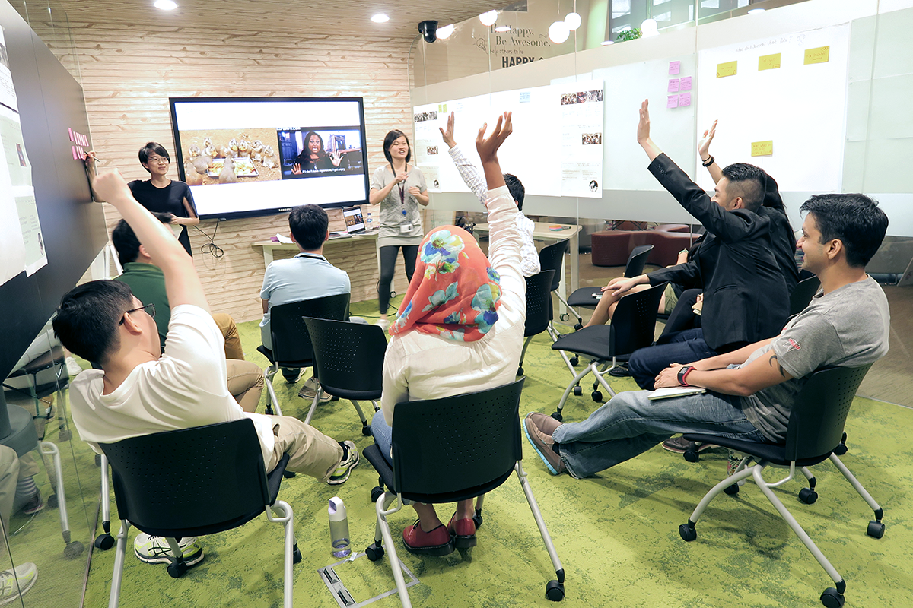

<section id="about">
  <div class="container">
    <div class="content">
      <h1>
        Hi, I am Yi Xin, a UI/UX Designer<br /> based in Singapore.
      </h1>
      <a href="files/resume2018.pdf" target="_blank"><button type="button">Download CV</button></a>
        <p>
          I am currently working at GovTech, making citizen-facing products and tools for public officers. Being able to make an impact in people's lives through design is a dream come true for me.
        </p>

      <p>
         As part of the <a href="https://open.gov.sg/">Open Government Products</a> team at GovTech, I had the opportunity to transform the bus industry
        with <a href="https://www.beeline.sg/">Beeline</a> and digitise the citizens’ parking journey with <a href="https://www.parking.sg/">Parking.sg</a>. For the past 4 years, I have experienced multiple product cycles and led design for these projects from discovery, user research, prototyping, information architecture, user interface design to charting product strategy, running of test trials, to launch and finally production.
      </p>
      
      <h6>I am in grey, running a team workshop to discuss the future of mobility.</h6>
      <p>
        Before joining the government, I worked on One Upon Light, an award-winning indie monochromatic puzzle game about light and shadows on Sony PS4, done together with the awesome people at SUTD Game Lab. I have also mentored young designers and developers
        on design and development practices at the Game Innovation Programme. </p>
        
        <h6>The One Upon Light Team</h6>
        <p>
          While it was fun making games, solving real world problems inspires me more. Hence, I left the game industry in 2012 to focus on designing practical applications. My game development background provided me a solid foundation on working across disciplines and and good development practices like design thinking, prototyping, user testing and version control.
      </p>
      <p>
        Outside of designing digital stuff, I enjoy swimming and eating mala hotpot. I also like to spend time with my husband and son. I am also slightly obsessed with mindfulness. Recognising the inner critic and how the brain has 2 major minds - the impulsive monkey mind vs the sensible regulating brain has been an empowering journey.
      </p>
      
      <h6>Me with my son and husband. Too bright for a wefie!</h6>

    </div>
  </div>
</section>
